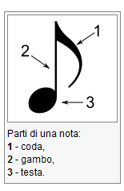
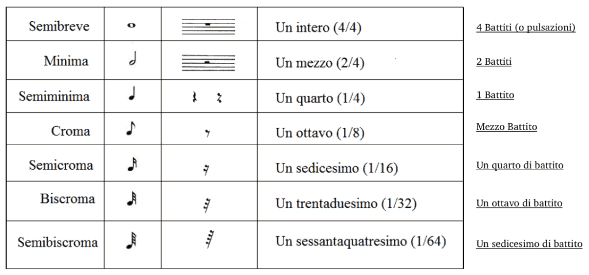
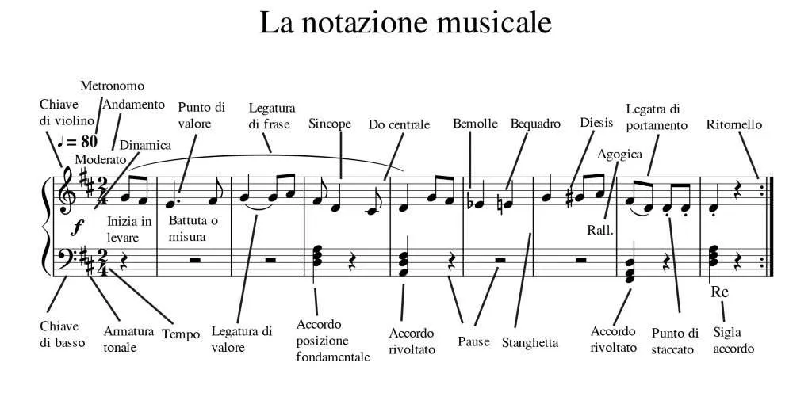
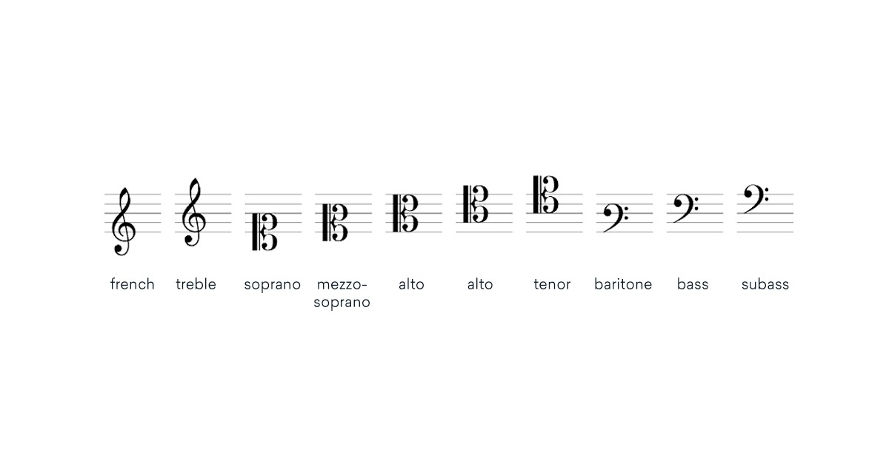
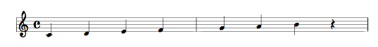
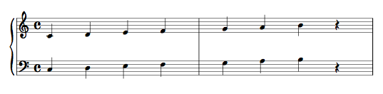
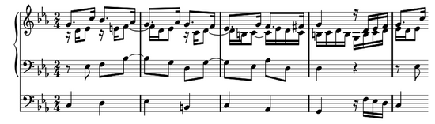

La notazione musicale è un sistema di segni grafici usati per rappresentare i suoni. In particolare, le note scritte sul pentagramma indicano sia l'altezza che la durata dei suoni.
Origini:
Antichità: Non avevano una notazione specifica, usavano le lettere dell'alfabeto per rappresentare i suoni della scala diatonica.
Medioevo: Con l'aumentare della complessità dei canti, nacquerò i primi aiuti chiamati neumi, scritti sopra il testo per indicare la direzione della melodia.
Ora:: Da questi, venne introdotto il tetragramma, attribuito a Guido d'Arezzo, che facilitava la memorizzazione dei canti, Francone da Colonia, inventò la scrittura delle durate basata su rapporti proporzionali, che indicava la durata delle note in relazione tra loro.
Nomenclatura note:
I nomi delle note, nei paesi latini, risalgono all'XI sec. e derivano dalle sillabe iniziali dei versetti dell'inno «Ut queant laxis».
In origine le note erano: ut, re, mi, fa, sol, la. Nel XVI sec si aggiunse la settima nota, "si" e nel XVII la nota "ut" viene sostituita da "do"
Le 8 Note Musicali:
Le note musicali sono:Do, Re, Mi, Fa, Sol, La, Si. Prova a suonarle anche te con questo video!
Struttura e Rappresentazione Grafica
Le note vengono disposte sul pentagramma, che è formato da cinque linee parallele, la loro posizione determina l'altezza del suono.
Ogni nota si compone di elementi grafici:
Testa: la parte circolare o ellittica sopra, che può essere vuota o riempita per indicare differenti valori.
Gambo: una barra verticale collegata alla testa, il cui orientamento (verso l'alto o il basso) segue regole estetiche e funzionali.
Code (o codette): tratti aggiuntivi attaccati al gambo, utilizzati per rappresentare valori di durata più brevi.
Se due o più note con code si susseguono, vengono unite da travature, ovvero bande orizzontali che collegano i gambi.

Altri aspetti della notazione:
Oltre alle note, include simboli per indicare pause (momenti di silenzio) e diverse figure ritmiche che esprimono la durata dei suoni e dei silenzi.
Il sistema si è evoluto nel tempo per permettere di scrivere in modo preciso e standardizzato la musica, rendendo più possibile la diffusione e l'interpretazione di opere musicali complesse.
Definizione dell'Altezza (Pitch)
L'altezza di suono è la caratteristica che ci permette di distinguerlo come grave o acuto.
Essa dipende dalla frequenza fondamentale: suoni a bassa frequenza risultano gravi, mentre quelli a frequenza elevata app
L'umano può percepire da circa 16 Hz a 20.000 Hz, anche se la musica pratica si concentra in un intervallo più ristretto (es. un pianoforte da 88 tasti, quindi standard, copre da 55 Hz fino a 8400 Hz).
La minima differenza percepibile è dell'ordine di 5 cent, una quantità molto piccola che può variare in base a fattori come il volume o la presenza di armonici.
Fattori influenzanti e percezione
La percezione dell'altezza non dipende solo dalla frequenza, essa è influenzata anche dall'intensità del suono (es. una nota grave suonata a bassa intensità può essere percepita ancora più grave.)
Legge di Weber-Fechner: la percezione sensoriale dell'altezza segue una scala logaritmica, cioè le piccole variazioni in frequenze basse sono più evidenti rispetto a quelle a frequenze alte.
Alcune illusioni uditive, come Scala di Shepard o paradosso del tritono, mostrano come possiamo essere ingannati, facendo apparire una sequenza di toni come se fosse infinitamente ascendente o discendente.
Fattori fisici che influenzano l'altezza negli strumenti a corda
Per strumenti a suono determinato, come il pianoforte o gli archi, l'altezza di una nota è inflenzata da tre fattori fondamentali:
Lunghezza della corda: Una corda più lunga vibra più lentamente, quindi produce un suono più grave. In altre parole, la frequenza è inversamente proporzionale alla lunghezza (f ∝ 1/l/l).
Tensione della corda: Aumentando la tensione, la corda vibra più rapidamente, producendo un suono più acuto (f ∝ √T).
Densità della Corda: Una corda con maggiore massa per unità di lunghezza vibra più lentamente, risultando in un suono più grave (f ∝ 1/√ρ).
Valori delle Note e delle Pause
Le note e le pause hanno valori e simboli specifici che indicano la loro durata. I valori delle note e pause sono:
Semibreve, dura un intero (4/4) cioè 4 battiti.
Minima, dura un mezzo (2/4) cioè 2 battiti.
Semiminima, dura un quarto (1/4) cioè 1 battiti.
Croma, dura un ottavo (1/48) cioè mezzo battito.
Semicroma, dura un sedicesimo (1/16) cioè un quarto di battito.
Biscroma, dura un trentaduesimo (1/32) cioè un ottavo di battito.
Semibiscroma, dura un sessantaquattresimo (1/64) cioè sedicesimo di battito.
Modificatori: L'aggiunta di uno, due o tre punti dopo la testa di una nota incrementa la sua durata: il primo aggiunge metà del valore originale, il secondo metà del valore del punto precedente, e così via.

In alcune composizioni le note vengono raggruppate in maniera che non seguano la suddivisione naturale del tempo (detta misura), generando gruppi irregolari.
Questi si classificano in:
Irregolari per eccesso: ad esempio, terzine e sestine, in cui si eseguono più note rispetto alla suddivisione prevista in un tempo semplice.
Irregolari per diminuzione: come le duine o quartine, in cui si eseguono meno note in un tempo composto rispetto a quanto atteso.
Irregolari per formazione: gruppi di 5, 7, 11 note (quintine, settimine, ecc.) che non seguono nè un ritmo binario nè ternario e risultano più complessi da eseguire.
I gruppi irregolari sono indicati con una legatura (o un gruppo di travature) e un numero che specifica il rapporto del gruppo. Possono essere "semplici" (note di stesso valore), "composti" (note di valori differenti) o "complessi" (contenenti ulteriori gruppi irregolari).
Pentagramma
Il pentagramma è un insieme di cinque linee orizzontali parallele che creano quattro spazi. Sul pentagramma vengono scritte le note, le pause e altri simboli musicali. La posizione di una nota (sulle linee o negli spazi) determina l'altezza del suono.

Chiavi musicali:
All'inizio del pentagramma si inseriscono le chiavi che definiscono quali note corrispondono a ciascuna posizione. Sono tutte posizionate su un rigo diverso, al quale danno il nome.
Le chiavi musicali sono:
Chiave di violino (o di sol): posizionata sul secondo rigo, è utilizzata sul violino, flauto, chitarra, pianoforte.
Chiave di basso (o di fa): posizionata sul quarto rigo, è utilizzata dalla viola, violoncello, trombone, oboe, corno inglese, fagotto, contrabbasso.
Chiave di baritono: posizionata sul terzo rigo, è utilizzata da strumenti a tastiera.
Chiave di soprano: posizionata sul primo rigo, è utilizzata da strumenti a tastiera.
Chiave di mezzosoprano: posizionata sul secondo rigo.
Chiave di contralto: posizionata sul tero rigo, è utilizzata da strumenti a tastiera, viola, viola da gamba, trombone tenore e contralto, mandola, corno inglese.
Chiave di tenore (o di do): posizionata sul quarto rigo, è utilizzata dal trombone tenore, fagotto, eufonio, violoncello, contrabbasso.

Tipologie di pentagramma:
Esistono vari tipi di pentagramma e sono:
Semplice o singolo: usato per la voce o strumenti con un'estensione limitata, come la chitarra.

Doppio: tipico per strumenti come il pianoforte, dove i due pentagrammi distinguono le mani destra e sinistra.

Triplo o multiplo: impiegati per organi o partiture complesse che richiedono più registri.

Misure e suddivisoni:
Sul pentagramma vengono tracciate linee verticali, chiamate stanghette, che determinano le misure (la durata delle 4/4 battute).
Nella prima misura viene specificata la chiave, seguita dall'armatura di chiave (tonalità/scala in cui il brano è scritto). All'inizio del brano viene l'indicazione del metro, ovvero del numero e del valore dei tempi di ogni misura.